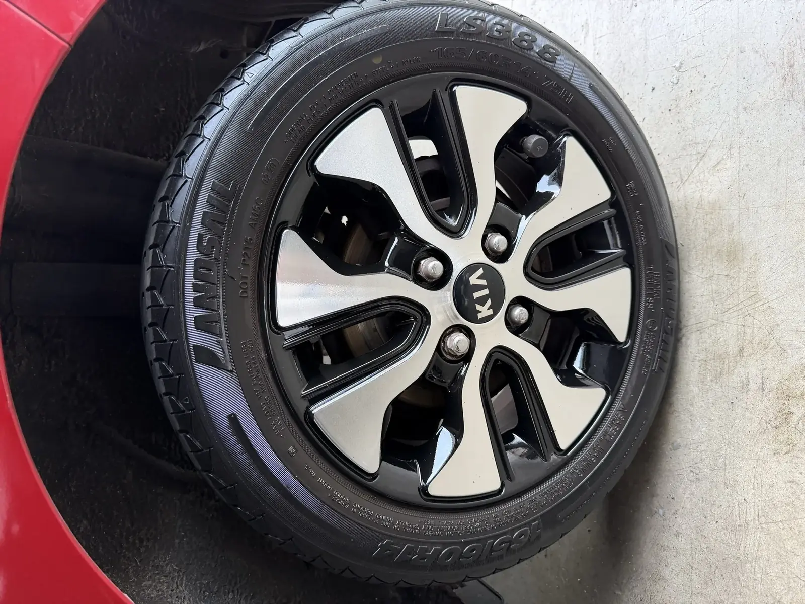

Un véhicule d'occasion exposé avec des jantes rayées ou ternes se présente moins bien, même quand le reste de la préparation est soigné : sur une photo d'annonce comme en showroom, les jantes se voient. Pour un centre de reconditionnement, la difficulté n'est pas de savoir qu'il faut les traiter, mais de le faire sans désorganiser le flux.

Pourquoi les jantes sont un poste à part
Carrosserie, mécanique, intérieur : ces postes se traitent généralement dans votre site. Les jantes demandent un enchaînement spécifique (décapage, traitement, peinture, vernis) et, selon les cas, du dévoilage ou de la soudure TIG aluminium. Plutôt que de multiplier les investissements, beaucoup de sites préfèrent confier ce poste à un sous-traitant spécialisé.
Trier avant de traiter : toutes les jantes ne se valent pas
- Rayures et frottements de trottoir : rénovation esthétique.
- Jante voilée (vibrations) : dévoilage, atelier uniquement.
- Fissure : soudure TIG après diagnostic, atelier uniquement. Si la jante n'est pas réparable en sécurité, nous vous le disons avant de commencer.
- Corrosion, ternissement, diamantée qui blanchit : reprise adaptée à l'état, devis sur photos.
La décision reste la vôtre, véhicule par véhicule : vous comparez le prix du devis à votre bénéfice attendu. Nous ne promettons aucune hausse du prix de revente ni délai de vente.
Organiser le flux : lot, planning, photos
- 1. La liste : vous envoyez les véhicules concernés et deux ou trois photos par jante.
- 2. Le devis par lot : prix HT par jante, lieu d'intervention et délai indicatif, par écrit, gratuit.
- 3. Le planning : pour un besoin régulier, des créneaux sont convenus ensemble ; aucune cadence n'est garantie ni facturée automatiquement.
- 4. L'intervention : sur votre site à partir de 3 jantes dans notre zone, ou à l'atelier de La Mulatière sans minimum.
- 5. Le compte rendu : photos avant et après de chaque jante, sur demande, rattachées à votre véhicule.
- 6. Le contrôle : contrôle avant restitution et garantie satisfaction de 30 jours.
Délais indicatifs
En atelier, une rénovation prend en général 24 à 48 h par jante ; une personnalisation 2 à 4 jours (jusqu'à 5 pour une finition poli diamant ou bi-ton) ; la peinture époxy 3 jours. Ce sont des ordres de grandeur : le délai du lot est confirmé dans le devis, après diagnostic.
Ce qui se définit ensemble avant de commencer
Lieu d'intervention, éventuelle collecte (jamais incluse par défaut), facturation et conditions pour un flux régulier : tout est écrit avant le premier chantier. Aucune remise de volume, facturation mensuelle ni délai garanti n'est appliqué sans accord écrit. Déplacement inclus à Lyon (1er au 9e) et 10 à 15 km autour, à partir de 3 jantes ; au-delà, jusqu'à 20 à 30 km autour de Lyon, forfait kilométrique au devis.
Questions fréquentes
Traitez-vous les jantes par lots ?
Oui. Vous nous transmettez la liste et les photos, nous répondons par un devis par lot avec le prix HT par jante et un délai indicatif.
Y a-t-il un minimum de jantes ?
À l'atelier de La Mulatière, non. Pour une intervention sur site avec déplacement inclus, le minimum est de 3 jantes dans notre zone (Lyon 1er au 9e et 10 à 15 km autour de Lyon).
Recevons-nous un compte rendu par véhicule ?
Oui, sur demande : photos avant et après de chaque jante, utilisables pour votre dossier de reconditionnement.
Quelle garantie ?
Une garantie satisfaction de 30 jours : si le résultat ne convient pas, nous reprenons la jante intégralement, sans frais.